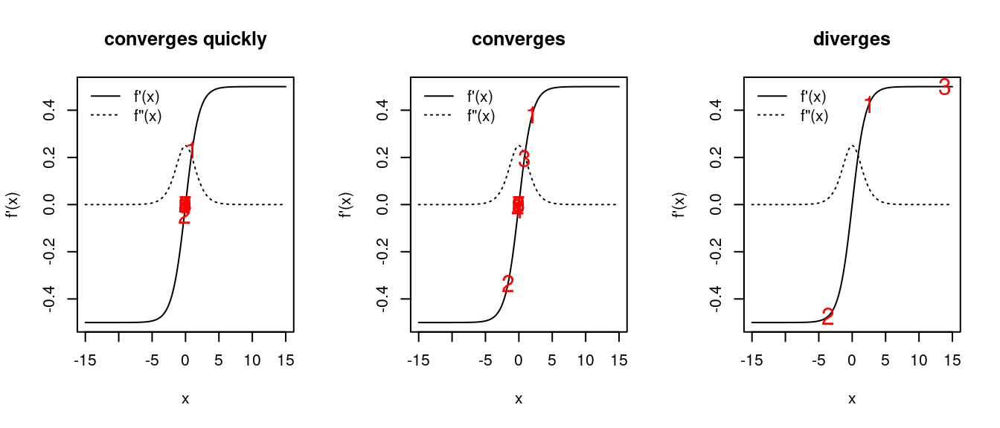
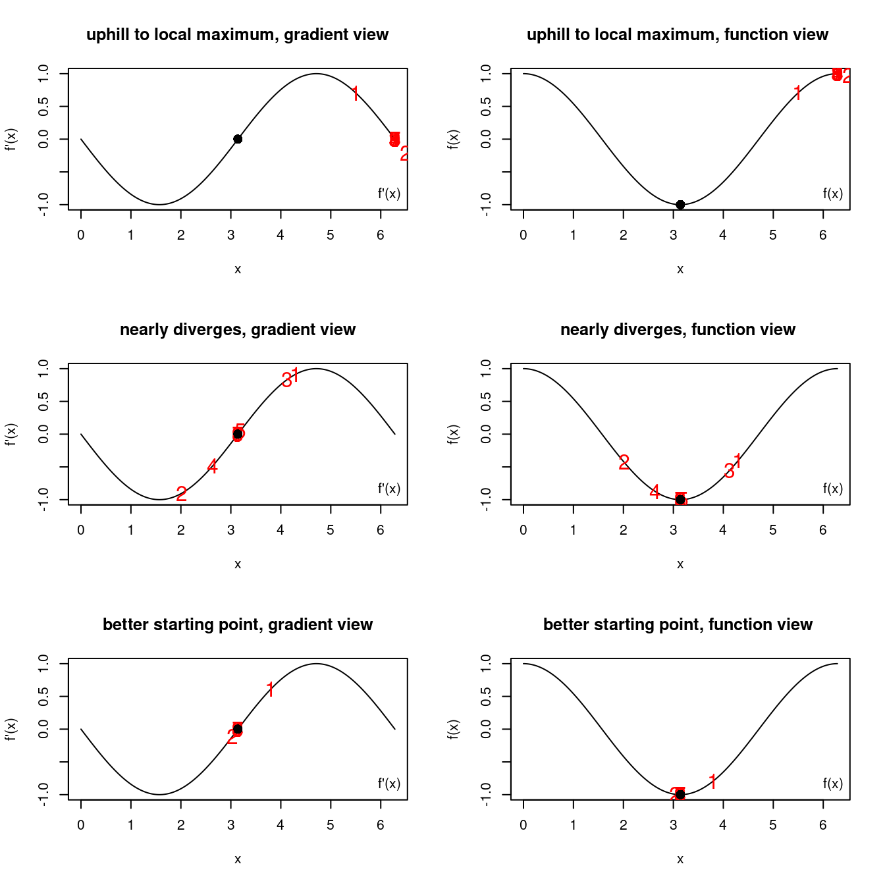
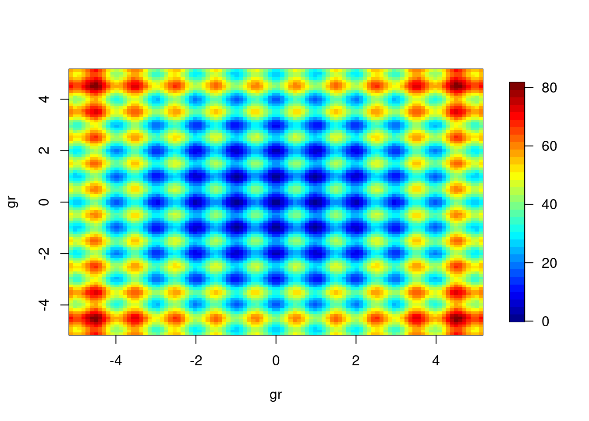
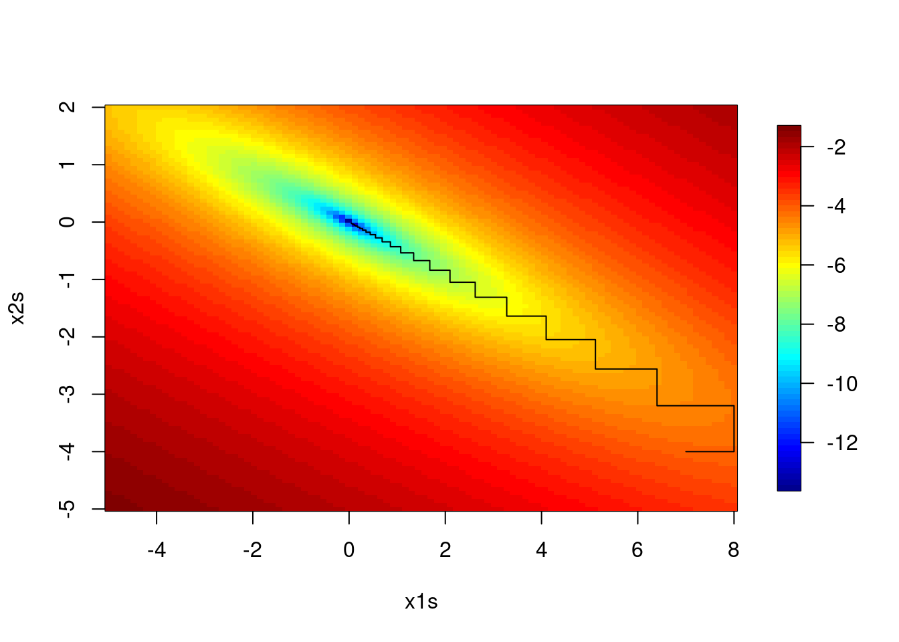
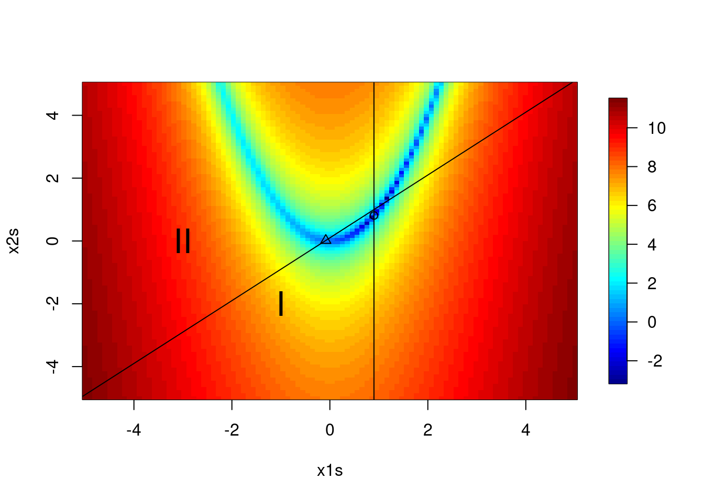
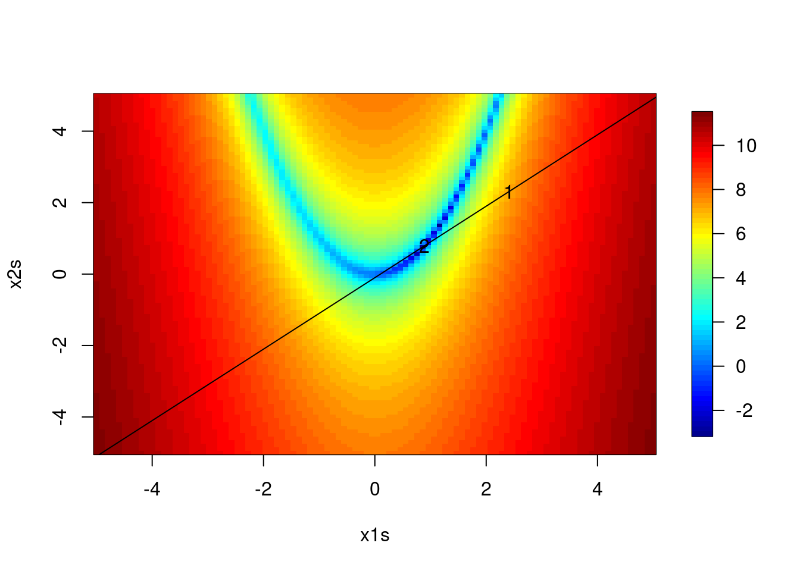

There are various videos from 2020 in the bCourses Media Gallery that you can use for reference if you want to.
Video 1. Convergence in optimization
Video 2. Profiling
Video 3. Multivariate Newton-Raphson
Video 4. Descent methods and Newton-like methods
Video 5. Stochastic gradient descent
Video 6. Coordinate descent
Video 7. Nelder-Mead
Video 8. Optimization in practice
Video 9. Introduction to optimization under constraints
Video 10. Optimization under equality constraints
Video 11. Barrier method for constrained optimization
1. Notation
We’ll make use of the first derivative (the gradient) and second derivative (the Hessian) of functions. We’ll generally denote univariate and multivariate functions (without distinguishing between them) as \(f(x)\) with \(x=(x_{1},\ldots,x_{p})\). The (column) vector of first partial derivatives (the gradient) is \(f^{\prime}(x)=\nabla f(x)=(\frac{\partial f}{\partial x_{1}},\ldots,\frac{\partial f}{\partial x_{p}})^{\top}\) and the matrix of second partial derivatives (the Hessian) is
\[f^{\prime\prime}(x)=\nabla^{2}f(x)=H_{f}(x)=\left(\begin{array}{cccc}
\frac{\partial^{2}f}{\partial x_{1}^{2}} & \frac{\partial^{2}f}{\partial x_{1}\partial x_{2}} & \cdots & \frac{\partial^{2}f}{\partial x_{1}\partial x_{p}}\\
\frac{\partial^{2}f}{\partial x_{1}\partial x_{2}} & \frac{\partial^{2}f}{\partial x_{2}^{2}} & \cdots & \frac{\partial^{2}f}{\partial x_{2}\partial x_{p}}\\
\vdots & \vdots & \ddots\\
\frac{\partial^{2}f}{\partial x_{1}\partial x_{p}} & \frac{\partial^{2}f}{\partial x_{2}\partial x_{p}} & \cdots & \frac{\partial^{2}f}{\partial x_{p}^{2}}
\end{array}\right).\] In considering iterative algorithms, I’ll use \(x_{0},\,x_{1},\ldots,x_{t},\,x_{t+1}\) to indicate the sequence of values as we search for the optimum, denoted \(x^{*}\). \(x_{0}\) is the starting point, which we must choose (often carefully). If it’s unclear at any point whether I mean a value of \(x\) in the sequence or a sub-element of the \(x\) vector, let me know, but hopefully it will be clear from context most of the time.
I’ll try to use \(x\) (or if we’re talking explicitly about a likelihood, \(\theta\)) to indicate the argument with respect to which we’re optimizing and \(Y\) to indicate data involved in a likelihood. I’ll try to use \(z\) to indicate covariates/regressors so there’s no confusion with \(x\).
2. Overview
The basic goal here is to optimize a function numerically when we cannot find the maximum (or minimum) analytically. Some examples:
Finding the MLE for a GLM
Finding least squares estimates for a nonlinear regression model, \[Y_{i}\sim\mathcal{N}(g(z_{i};\beta),\sigma^{2})\] where \(g(\cdot)\) is nonlinear and we seek to find the value of \(\theta=(\beta,\sigma^{2})\) that best fits the data.
Maximizing a likelihood under constraints
Fitting a machine learning prediction method
Maximum likelihood estimation and variants thereof is a standard situation in which optimization comes up.
We’ll focus on minimization, since any maximization of \(f\) can be treated as minimization of \(-f\). The basic setup is to find the argument, \(x\), that minimizes \(f(x)\): \[x^{*}=\arg\min_{x\in D}f(x)\] where \(D\) is the domain. Sometimes \(D=\Re^{p}\) but other times it imposes constraints on \(x\). When there are no constraints, this is unconstrained optimization, where any \(x\) for which \(f(x)\) is defined is a possible solution. We’ll assume that \(f\) is continuous as there’s little that can be done systematically if we’re dealing with a discontinuous function.
In one dimension, minimization is the same as root-finding with the derivative function, since the minimum of a differentiable function can only occur at a point at which the derivative is zero. So with differentiable functions we’ll seek to find \(x^{*}\) s.t. \(f^{\prime}(x^{*})=\nabla f(x^{*})=0\). To ensure a minimum, we want that for all \(y\) in a neighborhood of \(x^{*}\), \(f(y)\geq f(x^{*})\), or (for twice differentiable functions) \(f^{\prime\prime}(x^{*})\geq0\).
In more than one dimension, we want that the Hessian evaluated at \(x^{*}\) is positive semi-definite, which tells us that moving in any direction away from \(x^{*}\) would not go downhill.
Different strategies are used depending on whether \(D\) is discrete and countable, or continuous, dense and uncountable. We’ll concentrate on the continuous case but the discrete case can arise in statistics, such as in doing variable selection.
In general we rely on the fact that we can evaluate \(f\). Often we make use of analytic or numerical derivatives of \(f\) as well.
To some degree, optimization is a solved problem, with good software implementations, so it raises the question of how much to discuss in this class. The basic motivation for going into some of the basic classes of optimization strategies is that the function being optimized changes with each problem and can be tricky to optimize, and I want you to know something about how to choose a good approach when you find yourself with a problem requiring optimization. Finding global, as opposed to local, minima can also be an issue.
Note that I’m not going to cover MCMC (Markov chain Monte Carlo) methods, which are used for approximating integrals and sampling from posterior distributions in a Bayesian context and in a variety of ways for optimization. If you take a Bayesian course you’ll cover this in detail, and if you don’t do Bayesian work, you probably won’t have much need for MCMC, though it comes up in MCEM (Monte Carlo EM) and simulated annealing, among other places.
Goals for the unit
Optimization is a big topic. Here’s what I would like you to get out of this:
an understanding of line searches (one-dimensional optimization),
an understanding of multivariate derivative-based optimization and how line searches are useful within this,
an understanding of derivative-free methods,
an understanding of the methods used in R’s optimization routines, their strengths and weaknesses, and various tricks for doing better optimization in R, and
a basic idea of what convex optimization is and when you might want to go learn more about it.
3. Univariate function optimization
We’ll start with some strategies for univariate functions. These can be useful later on in dealing with multivariate functions.
Golden section search
This strategy requires only that the function be unimodal.
Assume we have a single minimum, in \([a,b]\). We choose two points in the interval and evaluate them, \(f(x_{1})\) and \(f(x_{2})\). If \(f(x_{1})<f(x_{2})\) then the minimum must be in \([a,x_{2}]\), and if the converse in \([x_{1},b]\). We proceed by choosing a new point in the new, smaller interval and iterate. At each step we reduce the length of the interval in which the minimum must lie. The primary question involves what is an efficient rule to use to choose the new point at each iteration.
Suppose we start with \(x_{1}\) and \(x_{2}\) s.t. they divide \([a,b]\) into three equal segments. Then we use \(f(x_{1})\) and \(f(x_{2})\) to rule out either the leftmost or rightmost segment based on whether \(f(x_{1})<f(x_{2})\). If we have divided equally, we cannot place the next point very efficiently because either \(x_{1}\) or \(x_{2}\) equally divides the remaining space, so we are forced to divide the remaining space into relative lengths of 0.25, 0.25, and 0.5. The next time around, we may only rule out the shorter segment, which leads to inefficiency.
The efficient strategy is to maintain the golden ratio between the distances between the points using \(\phi=(\sqrt{5}-1)/2\approx.618\) (the golden ratio), which is determined by solving for \(\phi\) in this equation: \(\phi-\phi^{2}=2\phi-1\). We start with \(x_{1}=a+(1-\phi)(b-a)\) and \(x_{2}=a+\phi(b-a)\). Then suppose \(f(x_{1})<f(x_{2})\) so the minimum must be in \([a,x_{2}]\). Since \(x_{1}-a>x_{2}-x_{1}\), we now choose \(x_{3}\) in the interval \([a,x_{1}]\) to produce three subintervals, \([a,x_{3}],\,[x_{3},x_{1}],\,[x_{1},x_{2}]\). We choose to place \(x_{3}\) s.t. it uses the golden ratio in the interval \([a,x_{1}]\), namely \(x_{3}=a+(1-\phi)(x_{2}-a)\). This means that the length of the first subinterval is \((\phi-\phi^{2})(b-a)\) and the length of the third subinterval is \((2\phi-1)(b-a)\), but those lengths are equal because we found \(\phi\) to satisfy \(\phi-\phi^{2}=2\phi-1\).
The careful choice of \(\phi\) allows us to narrow the search interval by an equal proportion,\(1-\phi\), in each iteration. Eventually we have narrowed the minimum to between \(x_{t-1}\) and \(x_{t}\), where the difference \(|x_{t}-x_{t-1}|\) is sufficiently small (within some tolerance - see Section 4 for details), and we report \((x_{t}+x_{t-1})/2\).
Bisection method
The bisection method requires the existence of the first derivative but has the advantage over the golden section search of halving the interval at each step. We again assume unimodality.
We start with an initial interval \((a_{0},b_{0})\) and proceed to shrink the interval. Let’s choose \(a_{0}\) and \(b_{0}\), and set \(x_{0}\) to be the mean of these endpoints. Now we update according to the following algorithm, assuming our current interval is \([a_{t},b_{t}]\).
If \(f^{\prime}(a_{t})f^{\prime}(x_{t})<0\), then \([a_{t+1},b_{t+1}] = [a_{t},x_{t}]\)
If \(f^{\prime}(a_{t}) f^{\prime}(x_{t})>0\), then \([a_{t+1},b_{t+1}] = [x_{t},b_{t}]\)
and set \(x_{t+1}\) to the mean of \(a_{t+1}\) and \(b_{t+1}\). The basic idea is that if the derivative at both \(a_{t}\) and \(x_{t}\) is negative, then the minimum must be between \(x_{t}\) and \(b_{t}\), based on the intermediate value theorem. If the derivatives at \(a_{t}\) and \(x_{t}\) are of different signs, then the minimum must be between \(a_{t}\) and \(x_{t}\).
Since the bisection method reduces the size of the search space by one-half at each iteration, one can work out that each decimal place of precision requires 3-4 iterations. Obviously bisection is more efficient than the golden section search because we reduce by \(0.5>0.382=1-\phi\), so we’ve gained information by using the derivative. It requires an evaluation of the derivative however, while golden section just requires an evaluation of the original function.
Bisection is an example of a bracketing method, in which we trap the minimum within a nested sequence of intervals of decreasing length. These tend to be slow, but if the first derivative is continuous, they are robust and don’t require that a second derivative exist.
Newton-Raphson (Newton’s method)
Overview
We’ll talk about Newton-Raphson (N-R) as an optimization method rather than a root-finding method, but they’re just different perspectives on the same algorithm.
For N-R, we need two continuous derivatives that we can evaluate. The benefit is speed, relative to bracketing methods. We again assume the function is unimodal. The minimum must occur at \(x^{*}\) s.t. \(f^{\prime}(x^{*})=0\), provided the second derivative is non-negative at \(x^{*}\). So we aim to find a zero (a root) of the first derivative function. Assuming that we have an initial value \(x_{0}\) that is close to \(x^{*}\), we have the Taylor series approximation
Now set \(f^{\prime}(x)=0\), since that is the condition we desire (the condition that holds when we are at \(x^{*}\)), and solve for \(x\) to get \[x_{1}=x_{0}-\frac{f^{\prime}(x_{0})}{f^{\prime\prime}(x_{0})},\] and
iterate, giving us updates of the form \(x_{t+1}=x_{t}-\frac{f^{\prime}(x_{t})}{f^{\prime\prime}(x_{t})}\). What are we doing intuitively? Basically we are taking the tangent to \(f(x)\) at \(x_{0}\) and extrapolating along that line to where it crosses the x-axis to find \(x_{1}\). We then reevaluate \(f(x_{1})\) and continue to travel along the tangents.
One can prove that if \(f^{\prime}(x)\) is twice continuously differentiable, is convex, and has a root, then N-R converges from any starting point.
Note that we can also interpret the N-R update as finding the analytic minimum of the quadratic Taylor series approximation to \(f(x)\).
Newton’s method converges very quickly (as we’ll discuss in Section 4), but if you start too far from the minimum, you can run into serious problems.
Secant method variation on N-R
Suppose we don’t want to calculate the second derivative required in the divisor of N-R. We might replace the analytic derivative with a discrete difference approximation based on the secant line joining \((x_{t},f^{\prime}(x_{t}))\) and \((x_{t-1},f^{\prime}(x_{t-1}))\), giving an approximate second derivative:
Let’s think about what can go wrong - namely when we could have \(f(x_{t+1})>f(x_{t})\)? To be concrete (and without loss of generality), let’s assume that \(f(x_{t})>0\), in other words that \(x^{*}<x_{t}\).
As usual, we can develop some intuition by starting with the worst case that \(f^{\prime\prime}(x_{t})\) is 0, in which case the method would fail as \(x_{t+1}\) would be \(-\infty\).
Now suppose that \(f^{\prime\prime}(x_{t})\) is a small positive number. Basically, if \(f^{\prime}(x_{t})\) is relatively flat, we can get that \(|x_{t+1}-x^{*}|>|x_{t}-x^{*}|\) because we divide by a small value for the second derivative, causing \(x_{t+1}\) to be far from \(x_{t}\) (though it does at least go in the correct direction). We’ll see an example on the board and the demo code (see below).
Newton’s method can also go uphill (going in the wrong direction, away from \(x^{*}\)) when the second derivative is negative, with the method searching for a maximum, since we would have \(x_{t+1}>x_{t}\). Another way to think of this is that Newton’s method does not automatically minimize the function, rather it finds local optima.
In all these cases Newton’s method could diverge, failing to converge on the optimum.
First let’s see an example of divergence. The left and middle panels show two cases of convergence, while the right panel shows divergence. In the right panel, the initial second derivative value is small enough that \(x_{2}\) is further from \(x^{*}\) than \(x_{1}\) and then \(x_{3}\) is yet further away. In all cases the sequence of \(x\) values is indicated by the red letters.
par(mfrow =c(1, 3))fp <-function(x, theta =1){## first derivativeexp(x*theta)/(1+exp(x*theta)) - .5}fpp <-function(x, theta =1){## second derivativeexp(x*theta)/((1+exp(x*theta))^2)}xs <-seq(-15, 15, len =300)## good starting pointx0 <-1xvals <-c(x0,rep(NA,9))for(t in2:10){ xvals[t]=xvals[t-1] -fp(xvals[t-1]) /fpp(xvals[t-1])}## print(xvals)plot(xs, fp(xs), type ='l', xlab ='x', ylab ="f'(x)",main ='converges quickly')lines(xs, fpp(xs), lty =3)legend('topleft', bty ='n', lty =c(1,3), legend =c("f'(x)", 'f"(x)'))points(xvals, fp(xvals), pch =as.character(1:length(xvals)), col ='red', cex =1.5)## ok starting pointx0 <-2xvals <-c(x0,rep(NA,9))for(t in2:10){ xvals[t]=xvals[t-1] -fp(xvals[t-1]) /fpp(xvals[t-1])}## print(xvals)plot(xs, fp(xs), type ='l', xlab ='x', ylab ="f'(x)", main ='converges')lines(xs, fpp(xs), lty =3)legend('topleft', bty ='n', lty =c(1,3), legend =c("f'(x)", 'f"(x)'))points(xvals, fp(xvals), pch =as.character(1:length(xvals)), col ='red',cex =1.5)## bad starting pointx0 <-2.5xvals <-c(x0,rep(NA,9))for(t in2:10){ xvals[t]=xvals[t-1] -fp(xvals[t-1]) /fpp(xvals[t-1])}## print(xvals)## whoopsplot(xs, fp(xs), type ='l', xlab ='x', ylab ="f'(x)", main ='diverges')lines(xs, fpp(xs), lty =3)legend('topleft', lty =c(1,3), legend =c("f'(x)", 'f"(x)'), bty ='n')points(xvals, fp(xvals), pch =as.character(1:length(xvals)), col ='red', cex =1.5)

In the first row of the next figure, let’s see an example of climbing uphill and finding a local maximum rather than minimum. The other rows show convergence. In all cases the minimum is at \(x^{*}\approx3.14\)
par(mfrow =c(3,2))# original fxnf <-function(x) cos(x)# gradientfp <-function(x) -sin(x)# second derivativefpp <-function(x) -cos(x)xs <-seq(0, 2*pi, len =300)x0 <-5.5# starting pointfp(x0) # positive
[1] 0.7055403
fpp(x0) # negative
[1] -0.7086698
x1 <- x0 -fp(x0)/fpp(x0) # whoops, we've gone uphill ## because of the negative second derivativexvals <-c(x0,rep(NA,9))for(t in2:10){ xvals[t]=xvals[t-1]-fp(xvals[t-1])/fpp(xvals[t-1])}## print(xvals)plot(xs, fp(xs), type ='l', xlab ='x', ylab ="f'(x)",main ='uphill to local maximum, gradient view',)legend('bottomright', legend =c("f'(x)"), bty ='n')points(xvals, fp(xvals), pch =as.character(1:length(xvals)), col ='red', cex =1.5)points(pi, 0, pch =16, cex =1.5)## and we've found a maximum rather than a minimum...plot(xs, f(xs), type ='l', xlab ='x', ylab ="f(x)", main ='uphill to local maximum, function view ',)legend('bottomright', legend =c("f(x)"), bty ='n')points(xvals, f(xvals), pch =as.character(1:length(xvals)), col ='red', cex =1.5)points(pi, f(pi), pch =16, cex =1.5)## in contrast, with better starting points we can find the minimumx0 <-4.3# ok starting pointfp(x0)
[1] 0.9161659
fpp(x0)
[1] 0.4007992
x1 <- x0 -fp(x0)/fpp(x0) xvals <-c(x0,rep(NA,9))for(t in2:10){ xvals[t]=xvals[t-1]-fp(xvals[t-1])/fpp(xvals[t-1])}## print(xvals)# oscillates and comes close to diverging but convergesplot(xs, fp(xs), type ='l', xlab ='x', ylab ="f'(x)",main ='nearly diverges, gradient view',)legend('bottomright', legend =c("f'(x)"), bty ='n')points(xvals, fp(xvals), pch =as.character(1:length(xvals)), col ='red', cex =1.5)points(pi, 0, pch =16, cex =1.5)## and we've found a maximum rather than a minimum...plot(xs, f(xs), type ='l', xlab ='x', ylab ="f(x)", main ='nearly diverges, function view ',)legend('bottomright', legend =c("f(x)"), bty ='n')points(xvals, f(xvals), pch =as.character(1:length(xvals)), col ='red', cex =1.5)points(pi, f(pi), pch =16, cex =1.5)x0 <-3.8# good starting pointfp(x0)
[1] 0.6118579
fpp(x0)
[1] 0.7909677
x1 <- x0 -fp(x0)/fpp(x0) xvals <-c(x0,rep(NA,9))for(t in2:10){ xvals[t]=xvals[t-1]-fp(xvals[t-1])/fpp(xvals[t-1])}## print(xvals)## converges quicklyplot(xs, fp(xs), type ='l', xlab ='x', ylab ="f'(x)",main ='better starting point, gradient view',)legend('bottomright', legend =c("f'(x)"), bty ='n')points(xvals, fp(xvals), pch =as.character(1:length(xvals)), col ='red', cex =1.5)points(pi, 0, pch =16, cex =1.5)## and we've found a maximum rather than a minimum...plot(xs, f(xs), type ='l', xlab ='x', ylab ="f(x)", main ='better starting point, function view ',)legend('bottomright', legend =c("f(x)"), bty ='n')points(xvals, f(xvals), pch =as.character(1:length(xvals)), col ='red', cex =1.5)points(pi, f(pi), pch =16, cex =1.5)

One nice, general idea is to use a fast method such as Newton’s method safeguarded by a robust, but slower method. Here’s how one can do this for N-R, safeguarding with a bracketing method such as bisection. Basically, we check the N-R proposed move to see if N-R is proposing a step outside of where the root is known to lie based on the previous steps and the gradient values for those steps. If so, we could choose the next step based on bisection.
Another approach is backtracking. If a new value is proposed that yields a larger value of the function, backtrack to find a value that reduces the function. One possibility is a line search but given that we’re trying to reduce computation, a full line search is often unwise computationally (also in the multivariate Newton’s method, we are in the middle of an iterative algorithm for which we will just be going off in another direction anyway at the next iteration). A basic approach is to keep backtracking in halves. A nice alternative is to fit a polynomial to the known information about that slice of the function, namely \(f(x_{t+1})\), \(f(x_{t})\), \(f^{\prime}(x_{t})\) and \(f^{\prime\prime}(x_{t})\) and find the minimum of the polynomial approximation.
4. Convergence ideas
Convergence metrics
We might choose to assess whether \(f^{\prime}(x_{t})\) is near zero, which should assure that we have reached the critical point. However, in parts of the domain where \(f(x)\) is fairly flat, we may find the derivative is near zero even though we are far from the optimum. Instead, we generally monitor \(|x_{t+1}-x_{t}|\) (for the moment, assume \(x\) is scalar). We might consider absolute convergence: \(|x_{t+1}-x_{t}|<\epsilon\) or relative convergence, \(\frac{|x_{t+1}-x_{t}|}{|x_{t}|}<\epsilon\). Relative convergence is appealing because it accounts for the scale of \(x\), but it can run into problems when \(x_{t}\) is near zero, in which case one can use \(\frac{|x_{t+1}-x_{t}|}{|x_{t}|+\epsilon}<\epsilon\). We would want to account for machine precision in thinking about setting \(\epsilon\). For relative convergence a reasonable choice of \(\epsilon\) would be to use the square root of machine epsilon or about \(1\times10^{-8}\). This is the reltol argument in optim() in R.
Problems with the optimization may show up in a convergence measure that fails to decrease or cycles (oscillates). Software generally has a stopping rule that stops the algorithm after a fixed number of iterations; these can generally be changed by the user. When an algorithm stops because of the stopping rule before the convergence criterion is met, we say the algorithm has failed to converge. Sometimes we just need to run it longer, but often it indicates a problem with the function being optimized or with your starting value.
For multivariate optimization, we use a distance metric between \(x_{t+1}\) and \(x_{t}\), such as \(\|x_{t+1}-x_{t}\|_{p}\) , often with \(p=1\) or \(p=2\).
Starting values
Good starting values are important because they can improve the speed of optimization, prevent divergence or cycling, and prevent finding local optima.
Using random or selected multiple starting values can help with multiple optima (aka multimodality).
Here’s a function (the Rastrigin function) with multiple optima that is commonly used for testing methods that claim to work well for multimodal problems. This is a hard function to optimize with respect to, particularly in higher dimensions (one can do it in higher dimensions than 2 by simply making the \(x\) vector longer but having the same structure). In particular Rastrigin with 30 dimensions is considered to be very hard.
rastrigin <-function(x) { A <-10 n <-length(x)return(A*n +sum(x^2- A *cos(2*pi*x)))}const <-5.12nGrid <-100gr <-seq(-const, const, len = nGrid)xs <-expand.grid(x1 = gr, x2 = gr)y <-apply(xs, 1, rastrigin)fields::image.plot(gr, gr, matrix(y, nGrid, nGrid), col = fields::tim.colors(32))

One R package that may be useful for multi-modal problems is DEoptim, which implements an evolutionary algorithm (genetic algorithms are one kind of evolutionary algorithm). It would be interesting to try an evolutionary algorithm on a test function like this.
exists for \(\beta>0\) and \(c\ne0\), then a method is said to have order of convergence \(\beta\). This basically measures how big the error at the \(t+1\)th iteration is relative to that at the \(t\)th iteration, with the approximation that \(|\epsilon_{t+1}|\approx c|\epsilon_{t}|^{\beta}\).
Bisection doesn’t formally satisfy the criterion needed to make use of this definition, but roughly speaking it has linear convergence (\(\beta=1\)), so the magnitude of the error decreases by a factor of \(c\) at each step. Next we’ll see that N-R has quadratic convergence (\(\beta=2\)), which is fast.
To analyze convergence of N-R, consider a Taylor expansion of the gradient at the minimum, \(x^{*}\), around the current value, \(x_{t}\):
for some \(\xi_{t}\in[x^{*},x_{t}]\). Making use of the N-R update equation: \(x_{t+1}=x_{t}-\frac{f^{\prime}(x_{t})}{f^{\prime\prime}(x_{t})}\) to substitute , and some algebra, we have
If \(c\) were one, then we see that if we have \(k\) digits of accuracy at \(t\), we’d have \(2k\) digits at \(t+1\) (e.g., \(|\epsilon_{t}|=0.01\) results in \(|\epsilon_{t+1}|=0.0001\)), which justifies the characterization of quadratic convergence being fast. In practice \(c\) will moderate the rate of convergence. The smaller \(c\) the better, so we’d like to have the second derivative be large and the third derivative be small. The expression also indicates we’ll have a problem if \(f^{\prime\prime}(x_{t})=0\) at any point (think about what this corresponds to graphically - what is our next step when \(f^{\prime\prime}(x_{t})=0\)?). The characteristics of the derivatives determine the domain of attraction (the region in which we’ll converge rather than diverge) of the minimum.
Givens and Hoeting show that using the secant-based approximation to the second derivative in N-R has order of convergence, \(\beta\approx1.62\).
Here’s an example of convergence comparing bisection and N-R:
Optimizing as the dimension of the space gets larger becomes increasingly difficult:
In high dimensions, there are many possible directions to go.
One can end up having to do calculations with large vectors and matrices.
Multimodality increasingly becomes a concern (and can be hard to detect).
First we’ll discuss the idea of profiling to reduce dimensionality and then we’ll talk about various numerical techniques, many of which build off of Newton’s method (using second derivative information). We’ll finish by talking about methods that only use the gradient (and not the second derivative) and methods that don’t use any derivative information.
Profiling
A core technique for likelihood optimization is to analytically maximize over any parameters for which this is possible. Suppose we have two sets of parameters, \(\theta_{1}\) and \(\theta_{2}\), and we can analytically maximize w.r.t \(\theta_{2}\). This will give us \(\hat{\theta}_{2}(\theta_{1})\), a function of the remaining parameters over which analytic maximization is not possible. Plugging in \(\hat{\theta}_{2}(\theta_{1})\) into the objective function (in this case generally the likelihood or log likelihood) gives us the profile (log) likelihood solely in terms of the obstinant parameters. For example, suppose we have the regression likelihood with correlated errors:
\[Y\sim\mathcal{N}(X\beta,\sigma^{2}\Sigma(\rho)),\] where \(\Sigma(\rho)\) is a correlation matrix that is a function of a parameter, \(\rho\). The maximum w.r.t. \(\beta\) is easily seen to be the GLS estimator \(\hat{\beta}(\rho)=(X^{\top}\Sigma(\rho)^{-1}X)^{-1}X^{\top}\Sigma(\rho)^{-1}Y\). (In general such a maximum is a function of all of the other parameters, but conveniently it’s only a function of \(\rho\) here.) This gives us the initial profile likelihood
a function of \(\rho\) only, for which numerical optimization is much simpler.
Newton-Raphson (Newton’s method)
For multivariate \(x\) we have the Newton-Raphson update \(x_{t+1}=x_{t}-f^{\prime\prime}(x_{t})^{-1}f^{\prime}(x_{t})\), or in our other notation, \[x_{t+1}=x_{t}-H_{f}(x_{t})^{-1}\nabla f(x_{t}).\] In class we’ll use demo code (not shown here) for an example of finding the nonlinear least squares fit to some weight loss data to fit the model (but note that technically speaking one can use profiling in this case, so it’s not a perfect example):
Some of the things we need to worry about with Newton’s method in general about are (1) good starting values, (2) positive definiteness of the Hessian, and (3) avoiding errors in deriving the derivatives.
A note on the positive definiteness: since the Hessian may not be positive definite (although it may well be, provided the function is approximately locally quadratic), one can consider modifying the Cholesky decomposition of the Hessian to enforce positive definiteness by adding diagonal elements to \(H_{f}\) as necessary.
Next we’ll see that some optimization methods used commonly for statistical models (in particular Fisher scoring and iterative reweighted least squares (IRLS or IWLS) are just Newton-Raphson in disguise.
Fisher scoring variant on N-R (optional)
The Fisher information (FI) is the expected value of the outer product of the gradient of the log-likelihood with itself \[I(\theta)=E_{f}(\nabla f(y)\nabla f(y)^{\top}),\] where the expected
value is with respect to the data distribution. Under regularity conditions (true for exponential families), the expectation of the Hessian of the log-likelihood is minus the Fisher information, \(E_{f}H_{f}(y)=-I(\theta)\). We get the observed Fisher information by plugging the data values into either expression instead of taking the expected value.
Thus, standard N-R can be thought of as using the observed Fisher information to find the updates. Instead, if we can compute the expectation, we can use minus the FI in place of the Hessian. The result is the Fisher scoring (FS) algorithm. Basically instead of using the Hessian for a given set of data, we are using the FI, which we can think of as the average Hessian over repeated samples of data from the data distribution. FS and N-R have the same convergence properties (i.e., quadratic convergence) but in a given problem, one may be computationally or analytically easier. Givens and Hoeting comment that FS works better for rapid improvements at the beginning of iterations and N-R better for refinement at the end. \[\begin{aligned}
(NR):\,\theta_{t+1} & = & \theta_{t}-H_{f}(\theta_{t})^{-1}\nabla f(\theta_{t})\\
(FS):\,\theta_{t+1} & = & \theta_{t}+I(\theta_{t})^{-1}\nabla f(\theta_{t})\end{aligned}\]
There is some demo code in the source Rmd file (not shown here) that one can use to try out Fisher scoring in the weight loss example.
The Gauss-Newton algorithm for nonlinear least squares involves using the FI in place of the Hessian in determining a Newton-like step. nls() in R uses this approach. Note that this is not exactly the same updating as our manual coding of FS for the weight loss example.
Connections between statistical uncertainty and ill-conditionedness
When either the observed or expected FI matrix is nearly singular this means we have a small eigenvalue in the inverse covariance (the precision), which means a large eigenvalue in the covariance matrix. This indicates some linear combination of the parameters has low precision (high variance), and that in that direction the likelihood is nearly flat. As we’ve seen with N-R, convergence slows with shallow gradients, and we may have numerical problems in determining good optimization steps when the likelihood is sufficiently flat. So convergence problems and statistical uncertainty go hand in hand. One, but not the only, example of this occurs when we have nearly collinear regressors.
IRLS (IWLS) for Generalized Linear Models (GLMs)
As many of you know, iterative reweighted least squares (also called iterative weighted least squares) is the standard method for estimation with GLMs. It involves linearizing the model and using working weights and working variances and solving a weighted least squares (WLS) problem (recalling that the generic WLS solution is \(\hat{\beta}=(X^{\top}WX)^{-1}X^{\top}WY\)).
Exponential families can be expressed as
\[f(y;\theta,\phi)=\exp((y\theta-b(\theta))/a(\phi)+c(y,\phi)),\] with \(E(Y)=b^{\prime}(\theta)\) and \(\mbox{Var}(Y)=b^{\prime\prime}(\theta)\). If we have a GLM in the canonical parameterization (log link for Poisson data, logit for binomial), we have the natural parameter \(\theta\) equal to the linear predictor, \(\theta=\eta\). A standard linear predictor would simply be \(\eta=X\beta\).
Considering N-R for a GLM in the canonical parameterization (and ignoring \(a(\phi)\), which is one for logistic and Poisson regression), one can show that the gradient of the GLM log-likelihood is the inner product of the covariates and a residual vector, \(\nabla l(\beta)=(Y-E(Y))^{\top}X\), and the Hessian is \(H_{l}(\beta)=-X^{\top}WX\) where \(W\) is a diagonal matrix with \(\{\mbox{Var}(Y_{i})\}\) on the diagonal (the working weights). Note that both \(E(Y)\) and the variances in \(W\) depend on \(\beta\), so these will change as we iteratively update \(\beta\). Therefore, the N-R update is
where \(E(Y)_{t}\) and \(W_{t}\) are the values at the current parameter estimate, \(\beta_{t}\) . For example, for logistic regression (here with \(n_{i}=1\)), \(W_{t,ii}=p_{ti}(1-p_{ti})\) and \(E(Y)_{ti}=p_{ti}\) where \(p_{ti}=\frac{\exp(X_{i}^{\top}\beta_{t})}{1+\exp(X_{i}^{\top}\beta_{t})}\). In the canonical parameterization of a GLM, the Hessian does not depend on the data, so the observed and expected FI are the same, and therefore N-R and FS are the same.
The update above can be rewritten in the standard form of IRLS as a WLS problem, \[\begin{aligned}
\beta_{t+1} & = \beta_{t}+(X^{\top}W_{_{t}}X)^{-1}X^{\top}(Y-E(Y)_{t})\\
& = (X^{\top}W_{_{t}}X)^{-1}(X^{\top}W_{_{t}}X)\beta_{t}+(X^{\top}W_{_{t}}X)^{-1}X^{\top}(Y-E(Y)_{t})\\
& = (X^{\top}W_{_{t}}X)^{-1}X^{\top}W_{t}\left[X\beta_{t}+W_{t}^{-1}(Y-E(Y)_{t})\right]\\
& = (X^{\top}W_{_{t}}X)^{-1}X^{\top}W_{t}\tilde{Y}_{t},\end{aligned}\] where the so-called working observations are \(\tilde{Y}_{t}=X\beta_{t}+W_{t}^{-1}(Y-E(Y)_{t})\). Note that these are on the scale of the linear predictor. The interpretation is that the working observations are equal to the current fitted values, \(X\beta_{t}\), plus weighted residuals where the weight (the inverse of the variance) takes the actual residuals and scales to the scale of the linear predictor.
While IRLS is standard for GLMs, you can also use general purpose optimization routines.
IRLS is a special case of the general Gauss-Newton method for nonlinear least squares.
Descent methods and Newton-like methods
More generally a Newton-like method has updates of the form \[x_{t+1}=x_{t}-\alpha_{t}M_{t}^{-1}f^{\prime}(x_{t}).\] We can choose
\(M_{t}\) in various ways, including as an approximation to the second derivative.
This opens up several possibilities:
using more computationally efficient approximations to the second derivative,
avoiding steps that do not go in the correct direction (i.e., go uphill when minimizing), and
scaling by \(\alpha_{t}\) so as not to step too far.
Let’s consider a variety of strategies.
Descent methods
The basic strategy is to choose a good direction and then choose the longest step for which the function continues to decrease. Suppose we have a direction, \(p_{t}\). Then we need to move \(x_{t+1}=x_{t}+\alpha_{t}p_{t}\), where \(\alpha_{t}\) is a scalar, choosing a good \(\alpha_{t}\). We might use a line search (e.g., bisection or golden section search) to find the local minimum of \(f(x_{t}+\alpha_{t}p_{t})\) with respect to \(\alpha_{t}\). However, we often would not want to run to convergence, since we’ll be taking additional steps anyway.
Steepest descent chooses the direction as the steepest direction downhill, setting \(M_{t}=I\), since the gradient gives the steepest direction uphill (the negative sign in the equation below has us move directly downhill rather than directly uphill). Given the direction, we want to scale the step \[x_{t+1}=x_{t}-\alpha_{t}f^{\prime}(x_{t})\] where the contraction, or step length, parameter \(\alpha_{t}\) is chosen sufficiently small to ensure that we descend, via some sort of line search. The critical downside to steepest descent is that when the contours are elliptical, it tends to zigzag; here’s an example.
(Note that I do a full line search (using the golden section method via optimize()) at each step in the direction of steepest descent - this is generally computationally wasteful, but I just want to illustrate how steepest descent can go wrong, even if you go the “right” amount in each direction.)
If the contours are circular, steepest descent works well. Newton’s method deforms elliptical contours based on the Hessian. Another way to think about this is that steepest descent does not take account of the rate of change in the gradient, while Newton’s method does.
The general descent algorithm is
\[x_{t+1}=x_{t}-\alpha_{t}M_{t}^{-1}f'(x_{t}),\] where \(M_{t}\) is generally chose to approximate the Hessian and \(\alpha_{t}\) allows us to adjust the step in a smart way. Basically, since the negative gradient tells us the direction that descends (at least within a small neighborhood), if we don’t go too far, we should be fine and should work our way downhill. One can work this out formally using a Taylor approximation to \(f(x_{t+1})-f(x_{t})\) and see that we make use of \(M_{t}\) being positive definite. (Unfortunately backtracking with positive definite \(M_{t}\) does not give a theoretical guarantee that the method will converge. We also need to make sure that the steps descend sufficiently quickly and that the algorithm does not step along a level contour of \(f\).)
The conjugate gradient algorithm for iteratively solving large systems of equations is all about choosing the direction and the step size in a smart way given the optimization problem at hand.
Quasi-Newton methods such as BFGS
Other replacements for the Hessian matrix include estimates that do not vary with \(t\) and finite difference approximations. When calculating the Hessian is expensive, it can be very helpful to substitute an approximation.
A basic finite difference approximation requires us to compute finite differences in each dimension, but this could be computationally burdensome. A more efficient strategy for choosing \(M_{t+1}\) is to (1) make use of \(M_{t}\) and (2) make use of the most recent step to learn about the curvature of \(f^{\prime}(x)\) in the direction of travel. One approach is to use a rank one update to \(M_{t}\).
A basic strategy is to choose \(M_{t+1}\) such that the secant condition is satisfied: \[M_{t+1}(x_{t+1}-x_{t})=\nabla f(x_{t+1})-\nabla f(x_{t}),\] which is
motivated by the fact that the secant approximates the gradient in the direction of travel. Basically this says to modify \(M_{t}\) in such a way that we incorporate what we’ve learned about the gradient from the most recent step. \(M_{t+1}\) is not fully determined based on this, and we generally impose other conditions, in particular that \(M_{t+1}\) is symmetric and positive definite. Defining \(s_{t}=x_{t+1}-x_{t}\) and \(y_{t}=\nabla f(x_{t+1})-\nabla f(x_{t})\), the unique, symmetric rank one update (why is the following a rank one update?) that satisfies the secant condition is
If the denominator is positive, \(M_{t+1}\) may not be positive definite, but this is guaranteed for non-positive values of the denominator. One can also show that one can achieve positive definiteness by shrinking the denominator toward zero sufficiently.
A standard approach to updating \(M_{t}\) is a commonly-used rank two update that generally results in \(M_{t+1}\) being positive definite is
which is known as the Broyden-Fletcher-Goldfarb-Shanno (BFGS) update. This is one of the methods used in R in optim().
Question: how can we update \(M_{t}^{-1}\) to \(M_{t+1}^{-1}\) efficiently? It turns out there is a way to update the Cholesky of \(M_{t}\) efficiently and this is a better approach than updating the inverse.
The order of convergence of quasi-Newton methods is generally slower than the quadratic convergence of N-R because of the approximations but still faster than linear. In general, quasi-Newton methods will do much better if the scales of the elements of \(x\) are similar. Lange suggests using a starting point for which one can compute the expected information, to provide a good starting value \(M_{0}\).
Note that for estimating a covariance based on the numerical information matrix, we would not want to rely on \(M_{t}\) from the final iteration, as the approximation may be poor. Rather we would spend the effort to better estimate the Hessian directly at \(x^{*}\).
Stochastic gradient descent
Stochastic gradient descent (SGD) is the hot method in machine learning, commonly used for fitting deep neural networks. It allows you to optimize an objective function with respect to what is often a very large number of parameters even when the data size is huge.
Gradient descent is a simplification of Newton’s method that does not rely on the second derivative, but rather chooses the direction using the gradient and then a step size, \(\alpha_{t}\):
\[x_{t+1}=x_{t}-\alpha_{t}f^{\prime}(x_{t})\]
The basic idea of stochastic gradient descent is to replace the gradient with a function whose expected value is the gradient, \(E(g(x_{t}))=f^{\prime}(x_{t})\): \[x_{t+1}=x_{t}-\alpha_{t}g(x_{t})\] Thus on average we should go in a good (downhill) direction. Given that we know that strictly following the gradient can lead to slow convergence, it makes some intuitive sense that we could still do ok without using the exact gradient. One can show formally that SGD will converge for convex functions.
SGD can be used in various contexts, but the common one we will focus on is when \[\begin{aligned}
f(x) & = \sum_{i=1}^{n}f_{i}(x)\\
f^{\prime}(x) & = \sum_{i=1}^{n}f^{\prime}_{i}(x)\end{aligned}\] for large \(n\). Thus calculation of the gradient is \(O(n)\), and we may not want to incur that computational cost. How could we implement SGD in such a case? At each iteration we could randomly choose an observation and compute the contribution to the gradient from that data point, or we could choose a random subset of the data (this is mini-batch SGD), or there are variations where we systematically cycle through the observations or cycle through subsets. However, in some situations, convergence is actually much faster when using randomness. And if the data are ordered in some meaningful way we definitely do not want to cycle through the observations in that order, as this can result in a biased estimate of the gradient and slow convergence. So one generally randomly shuffles the data before starting SGD. Note that using subsets rather than individual observations is likely to be more effective as it can allow us to use optimized matrix/vector computations.
How should one choose the step size, \(\alpha_{t}\) (also called the learning rate)? One might think that as one gets close to the optimum, if one isn’t careful, one might simply bounce around near the optimum in a random way, without actually converging to the optimum. So intuition suggests that \(\alpha_{t}\) should decrease with \(t\). Some choices of step size have included:
\(\alpha_{t}=1/t\)
set a schedule, such that for \(T\) iterations, \(\alpha_{t}=\alpha\), then for the next \(T\), \(\alpha_{t}=\alpha\gamma\), then for the next \(T\), \(\alpha_{t}=\alpha\gamma^{2}\). A heuristic is for \(\gamma\in(0.8,0.9)\).
run with \(\alpha_{t}=\alpha\) for \(T\) iterations, then with \(\alpha_{t}=\alpha/2\) for \(2T\), then with \(\alpha_{t}=\alpha/4\) for \(4T\) and so forth.
Coordinate descent (Gauss-Seidel)
Gauss-Seidel is also known a back-fitting or cyclic coordinate descent. The basic idea is to work element by element rather than having to choose a direction for each step. For example backfitting used to be used to fit generalized additive models of the form \(E(Y)=f_{1}(z_{1})+f_{2}(z_{2})+\ldots+f_{p}(z_{p})\).
The basic strategy is to consider the \(j\)th component of \(f^{\prime}(x)\) as a univariate function of \(x_{j}\) only and find the root, \(x_{j,t+1}\) that gives \(f^{\prime}_{j}(x_{j,t+1})=0\). One cycles through each element of \(x\) to complete a single cycle and then iterates. The appeal is that univariate root-finding/minimization is easy, often more stable than multivariate, and quick.
However, Gauss-Seidel can zigzag, since you only take steps in one dimension at a time, as we see here.
f <-function(x){return(x[1]^2/1000+4*x[1]*x[2]/1000+5*x[2]^2/1000)}f1 <-function(x1, x2){ # f(x) as a function of x1return(x1^2/1000+4*x1*x2/1000+5*x2^2/1000)}f2 <-function(x2, x1){ # f(x) as a function of x2return(x1^2/1000+4*x1*x2/1000+5*x2^2/1000)}x1s <-seq(-5, 8, len =100); x2s =seq(-5, 2, len =100)fx <-apply(expand.grid(x1s, x2s), 1, f)fields::image.plot(x1s, x2s, matrix(log(fx), 100, 100))nIt <-49xvals <-matrix(NA, nr = nIt, nc =2)xvals[1, ] <-c(7, -4)## 5, -10for(t inseq(2, nIt, by =2)){## Note that full optimization along each axis is unnecessarily## expensive (since we are going to just take another step in the next## iteration. Just using for demonstration here. newx1 <-optimize(f1, x2 = xvals[t-1, 2], interval =c(-40, 40))$minimum xvals[t, ] <-c(newx1, xvals[t-1, 2]) newx2 <-optimize(f2, x1 = newx1, interval =c(-40, 40))$minimum xvals[t+1, ] <-c(newx1, newx2)}lines(xvals)

In the notes for Unit 9 on linear algebra, I discussed the use of Gauss-Seidel to iteratively solve \(Ax=b\) in situations where factorizing \(A\) (which of course is \(O(n^{3})\)) is too computationally expensive.
The lasso
The lasso uses an L1 penalty in regression and related contexts. A standard formulation for the lasso in regression is to minimize
\[\|Y-X\beta\|_{2}^{2}+\lambda\sum_{j}|\beta_{j}|\] to find \(\hat{\beta}(\lambda)\) for a given value of the penalty parameter, \(\lambda\). A standard strategy to solve this problem is to use coordinate descent, either cyclically, or by using directional derivatives to choose the coordinate likely to decrease the objective function the most (a greedy strategy). We need to use directional derivatives because the penalty function is not differentiable, but does have directional derivatives in each direction. The directional derivative of the objective function for \(\beta_{j}\) is \[-2\sum_{i}x_{ij}(Y_{i}-X_{i}^{\top}\beta)\pm\lambda\] where we add
\(\lambda\) if \(\beta_{j}\geq0\) and you subtract \(\lambda\) if \(\beta_{j}<0\). If \(\beta_{j,t}\) is 0, then a step in either direction contributes \(+\lambda\) to the derivative as the contribution of the penalty.
Once we have chosen a coordinate, we set the directional derivative to zero and solve for \(\beta_{j}\) to obtain \(\beta_{j,t+1}\).
The glmnet package in R (described in this Journal of Statistical Software paper) implements such optimization for a variety of penalties in linear model and GLM settings, including the lasso. This Mittal et al. paper describes similar optimization for survival analysis with very large \(p\), exploiting sparsity in the \(X\) matrix for computational efficiency; note that they do not use Newton-Raphson because the matrix operations are infeasible computationally.
One nice idea that is used in lasso and related settings is the idea of finding the regression coefficients for a variety of values of \(\lambda\), combined with “warm starts”. A general approach is to start with a large value of \(\lambda\) for which all the coefficients are zero and then decrease \(\lambda\). At each new value of \(\lambda\), use the estimated coefficients from the previous value as the starting values. This should allow for fast convergence and gives what is called the “solution path”. Often \(\lambda\) is chosen based on cross-validation.
The LARS (least angle regression) algorithm uses a similar strategy that allows one to compute \(\hat{\beta}_{\lambda}\) for all values of \(\lambda\) at once.
The lasso can also be formulated as the constrained minimization of \(\|Y-X\beta\|_{2}^{2}\) s.t. \(\sum_{j}|\beta_{j}|\leq c\), with \(c\) now playing the role of the penalty parameter. Solving this minimization problem would take us in the direction of quadratic programming, a special case of convex programming, discussed in Section 9.
Nelder-Mead
This approach avoids using derivatives or approximations to derivatives. This makes it robust, but also slower than Newton-like methods. The basic strategy is to use a simplex, a polytope of \(p+1\) points in \(p\) dimensions (e.g., a triangle when searching in two dimensions, tetrahedron in three dimensions...) to explore the space, choosing to shift, expand, or contract the polytope based on the evaluation of \(f\) at the points.
The algorithm relies on four tuning factors: a reflection factor, \(\alpha>0\); an expansion factor, \(\gamma>1\); a contraction factor, \(0<\beta<1\); and a shrinkage factor, \(0<\delta<1\). First one chooses an initial simplex: \(p+1\) points that serve as the vertices of a convex hull.
Evaluate and order the points, \(x_{1},\ldots,x_{p+1}\) based on \(f(x_{1})\leq\ldots\leq f(x_{p+1})\). Let \(\bar{x}\) be the average of the first \(p\)\(x\)’s.
(Reflection) Reflect \(x_{p+1}\) across the hyperplane (a line when \(p+1=3\)) formed by the other points to get \(x_{r}\), based on \(\alpha\).
\(x_{r}=(1+\alpha)\bar{x}-\alpha x_{p+1}\)
If \(f(x_{r})\) is between the best and worst of the other points, the iteration is done, with \(x_{r}\) replacing \(x_{p+1}\). We’ve found a good direction to move.
(Expansion) If \(f(x_{r})\) is better than all of the other points, expand by extending \(x_{r}\) to \(x_{e}\) based on \(\gamma\), because this indicates the optimum may be further in the direction of reflection. If \(f(x_{e})\) is better than \(f(x_{r})\), use \(x_{e}\) in place of \(x_{p+1}\). If not, use \(x_{r}\). The iteration is done.
\(x_{e}=\gamma x_{r}+(1-\gamma)\bar{x}\)
If \(f(x_{r})\) is worse than all the other points, but better than \(f(x_{p+1})\), let \(x_{h}=x_{r}\). Otherwise \(f(x_{r})\) is worse than \(f(x_{p+1})\) so let \(x_{h}=x_{p+1}\). In either case, we want to concentrate our polytope toward the other points.
(Contraction) Contract \(x_{h}\) toward the hyperplane formed by the other points, based on \(\beta\), to get \(x_{c}\). If the result improves upon \(f(x_{h})\) replace \(x_{p+1}\) with \(x_{c}\). Basically, we haven’t found a new point that is better than the other points, so we want to contract the simplex away from the bad point.
\(x_{c}=\beta x_{h}+(1-\beta)\bar{x}\)
(Shrinkage) Otherwise (if \(x_{c}\) is not better than \(x_{h}\)), replace \(x_{p+1}\) with \(x_{h}\) and shrink the simplex toward \(x_{1}\). Basically this suggests our step sizes are too large and we should shrink the simplex, shrinking towards the best point.
\(x_{i}=\delta x_{i}+(1-\delta)x_{1}\) for \(i=2,\ldots,p+1\)
Convergence is assessed based on the sample variance of the function values at the points, the total of the norms of the differences between the points in the new and old simplexes, or the size of the simplex. In class we’ll work through some demo code (not shown here) that illustrates the individual steps in an iteration of Nelder-Mead.
We can see the points at which the function was evaluated in the same quadratic example we saw in previous sections. The left hand panel shows the steps from a starting point somewhat far from the optimum, with the first 9 points numbered. In this case, we start with points 1, 2, and 3. Point 4 is a reflection. At this point, it looks like point 5 is a contraction but that doesn’t exactly follow the algorithm above (since Point 4 is between Points 2 and 3 so the iteration should end without a contraction), so perhaps the algorithm as implemented is a bit different than as described above. In any event, the new set is (2, 3, 4). Then point 6 and point 7 are reflection and expansion steps and the new set is (3, 4, 6). Points 8 and 9 are again reflection and expansion steps. The right hand panel shows the steps from a starting point near (actually at) the optimum. Points 4 and 5 are reflection and expansion steps, with the next set being (1, 2, 5). Now step 6 is a reflection but it is the worst of all the points, so point 7 is a contraction of point 2 giving the next set (1, 5, 7). Point 8 is then a reflection and point 9 is a contraction of point 5.
This is the default in optim() in R, however it is relatively slow, so you may want to try one of the alternatives, such as BFGS.
Simulated annealing (SA) (optional)
Simulated annealing is a stochastic descent algorithm, unlike the deterministic algorithms we’ve already discussed. It has a couple critical features that set it aside from other approaches. First, uphill moves are allowed; second, whether a move is accepted is stochastic, and finally, as the iterations proceed the algorithm becomes less likely to accept uphill moves.
Assume we are minimizing a negative log likelihood as a function of \(\theta\), \(f(\theta)\).
The basic idea of simulated annealing is that one modifies the objective function, \(f\) in this case, to make it less peaked at the beginning, using a “temperature” variable that changes over time. This helps to allow moves away from local minima, when combined with the ability to move uphill. The name comes from an analogy to heating up a solid to its melting temperature and cooling it slowly - as it cools the atoms go through rearrangements and slowly freeze into the crystal configuration that is at the lowest energy level.
Here’s the algorithm. We divide up iterations into stages, \(j=1,2,\ldots\) in which the temperature variable, \(\tau_{j}\), is constant. Like MCMC, we require a proposal distribution to propose new values of \(\theta\).
Propose to move from \(\theta_{t}\) to \(\tilde{\theta}\) from a proposal density, \(g_{t}(\cdot|\theta_{t})\), such as a normal distribution centered at \(\theta_{t}\).
Accept \(\tilde{\theta}\) as \(\theta_{t+1}\) according to the probability \(\min(1,\exp((f(\theta_{t})-f(\tilde{\theta}))/\tau_{j})\) - i.e., accept if a uniform random deviate is less than that probability. Otherwise set \(\theta_{t+1}=\theta_{t}\). Notice that for larger values of \(\tau_{j}\) the differences between the function values at the two locations are reduced (just like a large standard deviation spreads out a distribution). So the exponentiation smooths out the objective function when \(\tau_{j}\) is large.
Repeat steps 1 and 2 \(m_{j}\) times.
Increment the temperature and cooling schedule: \(\tau_{j}=\alpha(\tau_{j-1})\) and \(m_{j}=\beta(m_{j-1})\). Back to step 1.
The temperature should slowly decrease to 0 while the number of iterations, \(m_{j}\), should be large. Choosing these ‘schedules’ is at the core of implementing SA. Note that we always accept downhill moves in step 2 but we sometimes accept uphill moves as well.
For each temperature, SA produces an MCMC based on the Metropolis algorithm. So if \(m_{j}\) is long enough, we should sample from the stationary distribution of the Markov chain, \(\exp(-f(\theta)/\tau_{j}))\). Provided we can move between local minima, the chain should gravitate toward the global minima because these are increasingly deep (low values) relative to the local minima as the temperature drops. Then as the temperature cools, \(\theta_{t}\) should get trapped in an increasingly deep well centered on the global minimum. There is a danger that we will get trapped in a local minimum and not be able to get out as the temperature drops, so the temperature schedule is quite important in trying to avoid this.
A wide variety of schedules have been tried. One approach is to set \(m_{j}=1\forall j\) and \(\alpha(\tau_{j-1})=\frac{\tau_{j-1}}{1+a\tau_{j-1}}\) for a small \(a\). For a given problem it can take a lot of experimentation to choose \(\tau_{0}\) and \(m_{0}\) and the values for the scheduling functions. For the initial temperature, it’s a good idea to choose it large enough that \(\exp((f(\theta_{i})-f(\theta_{j}))/\tau_{0})\approx1\) for any pair \(\{\theta_{i},\theta_{j}\}\) in the domain, so that the algorithm can visit the entire space initially.
Simulated annealing can converge slowly. Multiple random starting points or stratified starting points can be helpful for finding a global minimum. However, given the slow convergence, these can also be computationally burdensome.
6. Basic optimization in R
Core optimization functions
R has several optimization functions.
optimize() is good for 1-d optimization: “The method used is a combination of golden section search and successive parabolic interpolation, and was designed for use with continuous functions.”
Another option is uniroot() for finding the zero of a function, which you can use to minimize a function if you can compute the derivative.
For more than one variable, optim() provides a variety of optimization methods including the robust Nelder-Mead method, the BFGS quasi-Newton method and simulated annealing. You can choose which method you prefer and can try multiple methods. You can supply a gradient function to optim() for use with the Newton-related methods but it can also calculate numerical derivatives on the fly. You can have optim() return the Hessian at the optimum (based on a numerical estimate), which then allows straighforward calculation of asymptotic variances based on the information matrix.
Also for multivariate optimization, nlm() uses a Newton-style method, for which you can supply analytic gradient and Hessian, or it will estimate these numerically. nlm() can also return the Hessian at the optimum.
The optimx package provides optimx(), which is a wrapper for a variety of optimization methods (including many of those in optim(), as well as nlm(). One nice feature is that it allow you to use multiple methods in the same function call.
In the demo code (not shown here; see the source Rmd file), we’ll work our way through a real example of optimizing a likelihood for some climate data on extreme precipitation.
Various considerations in using the R functions
As we’ve seen, initial values are important both for avoiding divergence (e.g., in N-R), for increasing speed of convergence, and for helping to avoid local optima. So it is well worth the time to try to figure out a good starting value or multiple starting values for a given problem.
Scaling can be important. One useful step is to make sure the problem is well-scaled, namely that a unit step in any parameter has a comparable change in the objective function, preferably approximately a unit change at the optimum. optim() allows you to supply scaling information through the parscale component of the control argument. Basically if \(x_{j}\) is varying at \(p\) orders of magnitude smaller than the other \(x\)s, we want to reparameterize to \(x_{j}^{*}=x_{j}\cdot10^{p}\) and then convert back to the original scale after finding the answer. Or we may want to work on the log scale for some variables, reparameterizing as \(x_{j}^{*}=\log(x_{j})\). We could make such changes manually in our expression for the objective function or make use of arguments such as parscale.
If the function itself gives very large or small values near the solution, you may want to rescale the entire function to avoid calculations with very large or small numbers. This can avoid problems such as having apparent convergence because a gradient is near zero, simply because the scale of the function is small. In optim() this can be controlled with the fnscale component of control.
Always consider your answer and make sure it makes sense, in particular that you haven’t ‘converged’ to an extreme value on the boundary of the space.
Venables and Ripley suggest that it is often worth supplying analytic first derivatives rather than having a routine calculate numerical derivatives but not worth supplying analytic second derivatives. As we’ll see in Unit 12, R can do symbolic (i.e., analytic) differentiation to find first and second derivatives using deriv().
In general for software development it’s obviously worth putting more time into figuring out the best optimization approach and supplying derivatives. For a one-off analysis, you can try a few different approaches and assess sensitivity.
The nice thing about likelihood optimization is that the asymptotic theory tells us that with large samples, the likelihood is approximately quadratic (i.e., the asymptotic normality of MLEs), which makes for a nice surface over which to do optimization. When optimizing with respect to variance components and other parameters that are non-negative, one approach to dealing with the constraints is to optimize with respect to the log of the parameter.
7. Combinatorial optimization over discrete spaces
Many statistical optimization problems involve continuous domains, but sometimes there are problems in which the domain is discrete. Variable selection is an example of this.
Simulated annealing can be used for optimizing in a discrete space. Another approach uses genetic algorithms, in which one sets up the dimensions as loci grouped on a chromosome and has mutation and crossover steps in which two potential solutions reproduce. An example would be in high-dimensional variable selection.
Stochastic search variable selection is a popular Bayesian technique for variable selection that involves MCMC.
8. Convexity
Many optimization problems involve (or can be transformed into) convex functions. Convex optimization (also called convex programming) is a big topic and one that we’ll only brush the surface of in Sections 8 and 9. The goal here is to give you enough of a sense of the topic that you know when you’re working on a problem that might involve convex optimization, in which case you’ll need to go learn more.
Optimization for convex functions is simpler than for ordinary functions because we don’t have to worry about local optima - any stationary point (point where the gradient is zero) is a global minimum. A set \(S\) in \(\Re^{p}\) is convex if any line segment between two points in \(S\) lies entirely within \(S\). More generally, \(S\) is convex if any convex combination is itself in \(S\), i.e., \(\sum_{i=1}^{m}\alpha_{i}x_{i}\in S\) for non-negative weights, \(\alpha_{i}\), that sum to 1. Convex functions are defined on convex sets - \(f\) is convex if for points in a convex set, \(x_{i}\in S\), we have \(f(\sum_{i=1}^{m}\alpha_{i}x_{i})\leq\sum_{i=1}^{m}\alpha_{i}f(x_{i})\). Strict convexity is when the inequality is strict (no equality).
The first-order convexity condition relates a convex function to its first derivative: \(f\) is convex if and only if \(f(x)\geq f(y)+\nabla f(y)^{\top}(x-y)\) for \(y\) and \(x\) in the domain of \(f\). We can interpret this as saying that the first order Taylor approximation to \(f\) is tangent to and below (or touching) the function at all points.
The second-order convexity condition is that a function is convex if (provided its first derivative exists), the derivative is non-decreasing, in which case we have \(f^{\prime\prime}(x)\geq0\,\,\forall x\) (for univariate functions). If we have \(f^{\prime\prime}(x)\leq0\,\,\forall x\) (a concave, or convex down function) we can always consider \(-f(x)\), which is convex. Convexity in multiple dimensions means that the gradient is nondecreasing in all dimensions. If \(f\) is twice differentiable, then if the Hessian is positive semi-definite, \(f\) is convex.
There are a variety of results that allow us to recognize and construct convex functions based on knowing what operations create and preserve convexity. The Boyd book is a good source for material on such operations. Note that norms are convex functions (based on the triangle inequality), \(\|\sum_{i=1}^{n}\alpha_{i}x_{i}\|\leq\sum_{i=1}^{n}\alpha_{i}\|x_{i}\|\).
We’ll talk about a general algorithm that works for convex functions (the MM algorithm) and about the EM algorithm that is well-known in statistics, and is a special case of MM.
MM algorithm
The MM algorithm is really more of a principle for constructing problem specific algorithms. MM stands for majorize-minorize. We’ll use the majorize part of it to minimize functions - the minorize part is the counterpart for maximizing functions.
Suppose we want to minimize a convex function, \(f(x)\). The idea is to construct a majorizing function, at \(x_{t}\), which we’ll call \(g\). \(g\) majorizes \(f\) at \(x_{t}\) if \(f(x_{t})=g(x_{t})\) and \(f(x)\leq g(x)\forall x\).
The iterative algorithm is as follows. Given \(x_{t}\), construct a majorizing function \(g_{t}(x).\) Then minimize \(g_{t}\) w.r.t. \(x\) (or at least move downhill, such as with a modified Newton step) to find \(x_{t+1}\). Then we iterate, finding the next majorizing function, \(g_{t+1}(x)\). The algorithm is obviously guaranteed to go downhill, and ideally we use a function \(g\) that is easy to work with (i.e., to minimize or go downhill with respect to). Note that we haven’t done any matrix inversions or computed any derivatives of \(f\). Furthermore, the algorithm is numerically stable - it does not over- or undershoot the optimum. The downside is that convergence can be quite slow.
The tricky part is finding a good majorizing function. Basically one needs to gain some skill in working with inequalities. The Lange book has some discussion of this.
An example is for estimating regression coefficients for median regression (aka least absolute deviation regression), which minimizes \(f(\theta)=\sum_{i=1}^{n}|y_{i}-z_{i}^{\top}\theta|=\sum_{i=1}^{n}|r_{i}(\theta)|\). Note that \(f(\theta)\) is convex because affine functions (in this case \(y_{i}-z_{i}^{\top}\theta\)) are convex, convex functions of affine functions are convex, and the summation preserves the convexity. We want to minimize \[\begin{aligned}
f(\theta) & = \sum_{i=1}^{n}|r_{i}(\theta)|\\
& = \sum_{i=1}^{n}\sqrt{r_{i}(\theta)^{2}}\end{aligned}\]
Next, \(h(x)=\sqrt{x}\) is concave, so we can use the following (commonly-used) inequality, \(h(x)\leq h(y)+h^{\prime}(y)(x-y)\) which holds for any concave function, \(h\), and note that we have equality when \(y=x\). For \(y=\theta_{t}\), the current value in the iterative optimization, we have: \[\begin{aligned}
f(\theta) & = \sum_{i=1}^{n}\sqrt{r_{i}(\theta)^{2}}\\
& \leq \sum_{i=1}^{n}\sqrt{r_{i}(\theta_{t})^{2}}+\frac{r_{i}(\theta)^{2}-r_{i}(\theta_{t})^{2}}{2\sqrt{r_{i}(\theta_{t})^{2}}}\\
& = g_{t}(\theta)\end{aligned}\] where the term on the right of the second equation is our majorizing function \(g(\theta)\) for the current \(\theta_{t}\). We then have \[\begin{aligned}
g_{t}(\theta) & = \sum_{i=1}^{n}\sqrt{r_{i}(\theta_{t})^{2}}+\frac{1}{2}\sum_{i=1}^{n}\frac{r_{i}(\theta)^{2}-r_{i}(\theta_{t})^{2}}{2\sqrt{r_{i}(\theta_{t})^{2}}}\\
& = \frac{1}{2}\sum_{i=1}^{n}\sqrt{r_{i}(\theta_{t})^{2}}+\frac{1}{2}\sum_{i=1}^{n}\frac{r_{i}(\theta)^{2}}{\sqrt{r_{i}(\theta_{t})^{2}}}\end{aligned}\] Our job in this iteration of the algorithm is to minimize \(g\) with respect to \(\theta\) (recall that \(\theta_{t}\) is a fixed value), so we can ignore the first sum, which doesn’t involve \(\theta\). Minimizing the second sum can be seen as a weighted least squares problem, where the numerator is the usual sum of squared residuals and the weights are \(w_{i}=\frac{1}{\sqrt{(y_{i}-z_{i}^{\top}\theta_{t})^{2}}}\). Intuitively this makes sense: the weight is large when the magnitude of the residual is small this makes up for the fact that we are using least squares when we want to mimimize absolute deviations. So our update is:
where \(W(\theta_{t})\) is a diagonal matrix with elements \(w_{1},\ldots,w_{n}.\)
As usual, we want to think about what could go wrong numerically. If we have some very small magnitude residuals, they will get heavily upweighted in this procedure, which might cause instability in our optimization.
For an example of MM being used in practice for a real problem, see Jung et al. (2014): Biomarker Detection in Association Studies: Modeling SNPs Simultaneously via Logistic ANOVA, Journal of the American Statistical Association 109:1355.
Expectation-Maximization (EM)
It turns out the EM algorithm that many of you have heard about is a special case of MM. For our purpose here, we’ll consider maximization.
The EM algorithm is most readily motivated from a missing data perspective. Suppose you want to maximize \(L(\theta|x)=f(x;\theta)\) based on available data in a missing data context. Denote the complete data as \(Y=(X,Z)\) with \(Z\) is missing. As we’ll see, in many cases, \(Z\) is actually a set of latent variables that we introduce into the problem to formulate it so we can use EM. The canonical example is when \(Z\) are membership indicators in a mixture modeling context. (Note that in the case where you introduce \(Z\), that also means that one could also just directly maximize \(L(\theta|x)\), which in many cases may work better than using the EM algorithm.)
In general, \(\log L(\theta;x)\) may be hard to optimize because it involves an integral over the missing data, \(Z\):
\[f(x;\theta)=\int f(x,z;\theta)dz,\] but the EM algorithm provides a recipe that makes the optimization straightforward for many problems.
The algorithm is as follows. Let \(\theta^{t}\) be the current value of \(\theta\). Then define \[Q(\theta|\theta^{t})=E(\log L(\theta|Y)|x;\theta^{t})\] The algorithm is
E step: Compute \(Q(\theta|\theta^{t})\), ideally calculating the expectation over the missing data in closed form. Note that \(\log L(\theta|Y)\) is a function of \(\theta\) so \(Q(\theta|\theta^{t})\) will involve both \(\theta\) and \(\theta^{t}\).
M step: Maximize \(Q(\theta|\theta^{t})\) with respect to \(\theta\), finding \(\theta^{t+1}\).
Continue until convergence.
Ideally both the E and M steps can be done analytically. When the M step cannot be done analytically, one can employ some of the numerical optimization tools we’ve already seen. When the E step cannot be done analytically, one standard approach is to estimate the expectation by Monte Carlo, which produces Monte Carlo EM (MCEM). The strategy is to draw from \(z_{j}\) from \(f(z|x,\theta^{t})\) and approximate \(Q\) as a Monte Carlo average of \(\log f(x,z_{j};\theta)\), and then optimize over this approximation to the expectation. If one can’t draw in closed form from the conditional density, one strategy is to do a short MCMC to draw a (correlated) sample.
EM can be show to increase the value of the function at each step using Jensen’s inequality (equivalent to the information inequality that holds with regard to the Kullback-Leibler divergence between two distributions) (Givens and Hoeting, p. 95, go through the details). Furthermore, one can show that it amounts, at each step, to maximizing a minorizing function for \(\log L(\theta)\) - the minorizing function (effectively \(Q\)) is tangent to \(\log L(\theta)\) at \(\theta^{t}\) and lies below \(\log L(\theta)\).
A standard example is a mixture model. (Here we’ll assume a mixture of normal distributions, but other distributions could be used.) Therefore we have \[f(x;\theta)=\sum_{k=1}^{K}\pi_{k}f_{k}(x;\mu_{k},\sigma_{k})\] where we have \(K\) mixture components and \(\pi_{k}\) are the (marginal) probabilities of being in each component. The complete parameter vector is \(\theta=\{\{\pi_{k}\},\{\mu_{k}\},\{\sigma_{k}\}\}\). Note that the likelihood is a complicated product (over observations) over the sum (over components), so maximization may be difficult. Furthermore, such likelihoods are well-known to be multimodal because of label switching.
To use EM, we take the group membership indicators for each observation as the missing data. For the \(i\)th observation, we have \(z_{i}\in\{1,2,\ldots,K\}\). Introducing these indicators “breaks the mixture”. If we know the memberships for all the observations, it’s often easy to estimate the parameters for each group based on the observations from that group. For example if the \(\{f_{k}\}\)’s were normal densities, then we can estimate the mean and variance of each normal density using the sample mean and sample variance of the \(x_{i}\)’s that belong to each mixture component. EM will give us a variation on this that uses “soft” (i.e., probabilistic) weighting.
The complete log likelihood given \(z\) and \(x\) is
where \(E(I(z_{i}=k)|x_{i};\theta^{t})\) is equal to the probability that the \(i\)th observation is in the \(k\)th group given \(x_{i}\) and \(\theta_{t}\), which is calculated from Bayes theorem as
We can now separately maximize \(Q(\theta|\theta^{t})\) with respect to \(\pi_{k}\) and \(\mu_{k},\sigma_{k}\) to find \(\pi_{k}^{t+1}\) and \(\mu_{k}^{t+1},\sigma_{k}^{t+1}\), since the expression is the sum of a term involving the parameters of the distributions and a term involving the mixture probabilities. In the latter case, if the \(f_{k}\) are normal distributions, you end up with a weighted sum of normal distributions, for which the estimators of the mean and variance parameters are the weighted mean of the observations and the weighted variance.
9. Optimization under constraints
Constrained optimization is harder than unconstrained, and inequality constraints harder to deal with than equality constraints.
Constrained optimization can sometimes be avoided by reparameterizing. E.g., to optimize w.r.t. a variance component or other non-negative parameter, you can work on the log scale.
Optimization under constraints often goes under the name of ‘programming’, with different types of programming for different types of objective functions combined with different types of constraints.
Convex optimization (convex programming)
Convex programming minimizes \(f(x)\) s.t. \(h_{j}(x)\leq0,\,j=1,\ldots,m\) and \(a_{i}^{\top}x=b_{i},\,i=1,\ldots,q\), where both \(f\) and the constraint functions are convex. Note that this includes more general equality constraints, as we can write \(g(x)=b\) as two inequalities \(g(x)\leq b\) and \(g(x)\geq b\). It also includes \(h_{j}(x)\geq b_{j}\) by taking \(-h_{j}(x)\). Note that we can always have \(h_{j}(x)\leq b_{j}\) and convert to the above form by subtracting \(b_{j}\) from each side (note that this preserves convexity). A vector \(x\) is said to be feasible, or in the feasible set, if all the constraints are satisfied for \(x\).
There are good algorithms for convex programming, and it’s possible to find solutions when we have hundreds or thousands of variables and constraints. It is often difficult to recognize if one has a convex program (i.e., if \(f\) and the constraint functions are convex), but there are many tricks to transform a problem into a convex program and many problems can be solved through convex programming. So the basic challenge is in recognizing or transforming a problem to one of convex optimization; once you’ve done that, you can rely on existing methods to find the solution.
Linear programming, quadratic programming, second order cone programming and semidefinite programming are all special cases of convex programming. In general, these types of optimization are progressively more computationally complex.
First let’s see some of the special cases and then discuss the more general problem.
Linear programming: Linear system, linear constraints
Linear programming seeks to minimize \[f(x)=c^{\top}x\] subject to a system of \(m\) inequality constraints, \(a_{i}^{\top}x\leq b_{i}\) for \(i=1,\ldots,m\), where \(A\) is of full row rank. This can also be written in terms of generalized inequality notation, \(Ax\preceq b\). There are standard algorithms for solving linear programs, including the simplex method and interior point methods.
Note that each equation in the set of equations \(Ax=b\) defines a hyperplane, so each inequality in \(Ax\preceq b\) defines a half-space. Minimizing a linear function (presuming that the minimum exists) must mean that we push in the correct direction towards the boundaries formed by the hyperplanes, with the solution occuring at a corner (vertex) of the solid formed by the hyperplanes. The simplex algorithm starts with a feasible solution at a corner and moves along edges in directions that improve the objective function.
General system, equality constraints
Suppose we have an objective function \(f(x)\) and we have equality constraints, \(Ax=b\). We can manipulate this into an unconstrained problem. The null space of \(A\) is the set of \(\delta\) s.t. \(A\delta=0\). So if we start with a candidate \(x_{c}\) s.t. \(Ax_{c}=b\) (e.g., by using the pseudo inverse, \(A^{+}b\)), we can form all other candidates (a candidate is an \(x\) s.t. \(Ax=b\)) as \(x=x_{c}+\delta=x_{c}+Bz\) where \(B\) is a set of column basis functions for the null space of \(A\) and \(z\in\Re^{p-m}\). Consider \(h(z)=f(x_{c}+Bz)\) and note that \(h\) is a function of \(p-m\) rather than \(p\) inputs. Namely, we are working in a reduced dimension space with no constraints. If we assume differentiability of \(f\), we can express \(\nabla h(z)=B^{\top}\nabla f(x_{c}+Bz)\) and \(H_{h}(z)=B^{\top}H_{f}(x_{c}+Bz)B\). Then we can use unconstrained methods to find the point at which \(\nabla h(z)=0\).
How do we find \(B\)? One option is to use the \(p-m\) columns of \(V\) in the SVD of \(A\) that correspond to singular values that are zero. A second option is to take the QR decomposition of \(A^{\top}\). Then \(B\) is the columns of \(Q_{2}\), where these are the columns of the (non-skinny) Q matrix corresponding to the rows of \(R\) that are zero.
For more general (nonlinear) equality constraints, \(g_{i}(x)=b_{i}\), \(i=1,\ldots,q\), we can use the Lagrange multiplier approach to define a new objective function, \[L(x,\lambda)=f(x)+\lambda^{\top}(g(x)-b)\] for which, if we set the derivative (with respect to both \(x\) and the Lagrange multiplier vector, \(\lambda\)) equal to zero, we have a critical point of the original function and we respect the constraints.
An example occurs with quadratic programming, under the simplification of affine equality constraints (quadratic programming in general optimizes a quadratic function under affine inequality constraints - i.e., constraints of the form \(Ax-b\preceq0\)). For example we might solve a least squares problem subject to linear equality constraints, \(f(x)=\frac{1}{2}x^{\top}Qx+m^{\top}x+c\) s.t. \(Ax=b\), where \(Q\) is positive semi-definite. The Lagrange multiplier approach gives the objective function
and differentiating gives the equations \[\begin{aligned}
\frac{\partial L(x,\lambda)}{\partial x} & =m+Qx+A^{\top}\lambda = 0\\
\frac{\partial L(x,\lambda)}{\partial\lambda} & =Ax = b,\end{aligned}\] which gives us a system of equations that leads to the solution \[\left(\begin{array}{c} x \\ \lambda \end{array} \right) =
\left( \begin{array}{cc} Q & A^{\top} \\ A & 0 \end{array}\right)^{-1}
\left(\begin{array}{c} -m \\ b \end{array}\right).\label{eq:quadProg}\]
Using known results for inverses of matrices split into blocks, one gets that \(x^{*}=-Q^{-1}m+Q^{-1}A^{\top}(AQ^{-1}A^{\top})^{-1}(AQ^{-1}m+b)\). This can be readily coded up using strategies from Unit 10.
The dual problem (optional)
Sometimes a reformulation of the problem eases the optimization. There are different kinds of dual problems, but we’ll just deal with the Lagrangian dual. Let \(f(x)\) be the function we want to minimize, under constraints \(g_{i}(x)=0;\,i=1,\ldots,q\) and \(h_{j}(x)\leq0;\,j=1,\ldots,m\). Here I’ve explicitly written out the equality constraints to follow the notation in Lange. Consider the Langrangian,
because \(\inf_{x}L(x,\lambda,\mu)\leq f(x^{*})\) for the minimizing value \(x^{*}\) (p. 216 of the Boyd book). This gives us the Lagrange dual function: \[d(\lambda,\mu)=\inf_{x}L(x,\lambda,\mu),\] and the Lagrange dual problem is to find the best lower bound:
The dual problem is always a convex optimization problem because \(d(\lambda,\mu)\) is concave (because \(d(\lambda,\mu)\) is a pointwise infimum of a family of affine functions of \((\lambda,\mu)\)). If the optima of the primal (original) problem and that of the dual do not coincide, there is said to be a “duality gap”. For convex programming, if certain conditions are satisfied (called constraint qualifications), then there is no duality gap, and one can solve the dual problem to solve the primal problem. Usually with the standard form of convex programming, there is no duality gap. Provided we can do the minimization over \(x\) in closed form we then maximize \(d(\lambda,\mu)\) w.r.t. the Lagrangian multipliers in a new constrained problem that is sometimes easier to solve, giving us \((\lambda^{*},\mu^{*})\).
One can show (p. 242 of the Boyd book) that \(\mu_{i}^{*}=0\) unless the \(i\)th constraint is active at the optimum \(x^{*}\) and that \(x^{*}\) minimizes \(L(x,\lambda^{*},\mu^{*})\). So once one has \((\lambda^{*},\mu^{*})\), one is in the position of minimizing an unconstrained convex function. If \(L(x,\lambda^{*},\mu^{*})\) is strictly convex, then \(x^{*}\) is the unique optimum provided \(x^{*}\) satisfies the constraints, and no optimum exists if it does not.
Here’s a simple example: suppose we want to minimize \(x^{\top}x\) s.t. \(Ax=b\). The Lagrangian is \(L(x,\lambda)=x^{\top}x+\lambda^{\top}(Ax-b)\). Since \(L(x,\lambda)\) is quadratic in \(x\), the infimum is found by setting \(\nabla_{x}L(x,\lambda)=2x+A^{\top}\lambda=0\), yielding \(x=-\frac{1}{2}A^{\top}\lambda\). So the dual function is obtained by plugging this value of \(x\) into \(L(x,\lambda)\), which gives
which is concave quadratic. In this case we can solve the original constrained problem in terms of this unconstrained dual problem.
Another example is the primal and dual forms for finding the SVM classifier (see the Wikipedia article). In this algorithm, we want to develop a classifier using \(n\) pairs of \(y\in\Re^{1}\) and \(x\in\Re^{p}\). The dual form is easily derived because the minimization over \(x\) occurs in a function that is quadratic in \(x\). Expressing the problem in the primal form gives an optimization in \(\Re^{p}\) while doing so in the dual form gives an optimization in \(\Re^{n}\). So one reason to use the dual form would be if you have \(n\ll p\).
KKT conditions (optional)
Karush-Kuhn-Tucker (KKT) theory provides sufficient conditions under which a constrained optimization problem has a minimum, generalizing the Lagrange multiplier approach. The Lange and Boyd books have whole sections on this topic.
Suppose that the function and the constraint functions are continuously differentiable near \(x^{*}\) and that we have the Lagrangian as before:
For nonconvex problems, if \(x^{*}\) and \((\lambda^{*},\mu^{*})\) are the primal and dual optimal points and there is no duality gap, then the KKT conditions hold: \[\begin{aligned}
h_{j}(x^{*}) & \leq & 0\\
g_{i}(x^{*}) & = & 0\\
\mu_{j}^{*} & \geq & 0\\
\mu_{j}^{*}h_{j}(x^{*}) & = & 0\\
\nabla f(x^{*})+\sum_{i}\lambda_{i}^{*}\nabla g_{i}(x^{*})+\sum_{j}\mu_{j}^{*}\nabla h_{j}(x^{*}) & = & 0.\end{aligned}\]
For convex problems, we also have that if the KKT conditions hold, then \(x^{*}\) and \((\lambda^{*},\mu^{*})\) are primal and dual optimal and there is no duality gap.
We can consider this from a slightly different perspective, in this case requiring that the Lagrangian be twice differentiable.
First we need a definition. A tangent direction, \(w\), with respect to \(g(x)\), is a vector for which \(\nabla g_{i}(x)^{\top}w=0\). If we are at a point, \(x^{*}\), at which the constraint is satisfied, \(g_{i}(x^{*})=0\), then we can move in the tangent direction (orthogonal to the gradient of the constraint function) (i.e., along the level curve) and still satisfy the constraint. This is the only kind of movement that is legitimate (gives us a feasible solution).
If the gradient of the Lagrangian with respect to \(x\) is equal to 0,
and if \(w^{\top}H_{L}(x^{*},\lambda,\mu)w>0\) (with \(H_{L}\) being the Hessian of the Lagrangian) for all vectors \(w\) s.t. \(\nabla g(x^{*})^{\top}w=0\) and, for all active constraints,\(\nabla h(x^{*})^{\top}w=0\), then \(x^{*}\) is a local minimum. An active constraint is an inequality for which \(h_{j}(x^{*})=0\) (rather than \(h_{j}(x^{*})<0\), in which case it is inactive). Basically we only need to worry about the inequality constraints when we are on the boundary, so the goal is to keep the constraints inactive.
Some basic intuition is that we need positive definiteness only for directions that stay in the feasible region. That is, our only possible directions of movement (the tangent directions) keep us in the feasible region, and for these directions, we need the objective function to be increasing to have a minimum. If we were to move in a direction that goes outside the feasible region, it’s ok for the quadratic form involving the Hessian to be negative.
Many algorithms for convex optimization can be interpreted as methods for solving the KKT conditions.
Interior-point methods
We’ll briefly discuss one of the standard methods for solving a convex optimization problem. The barrier method is one type of interior-point algorithm. It turns out that Newton’s method can be used to solve a constrained optimization problem, with twice-differentiable \(f\) and linear equality constraints. So the basic strategy of the barrier method is to turn the more complicated constraint problem into one with only linear equality constraints.
Recall our previous notation, in which convex programming minimizes \(f(x)\) s.t. \(h_{i}(x)\leq0,\,i=1,\ldots,m\) and \(a_{i}^{\top}x=b_{i},\,i=1,\ldots,q\), where both \(f\) and the constraint functions are convex. The strategy begins with moving the inequality constraints into the objective function:
\[f(x)+\sum_{j=1}^{m}I_{-}(h_{j}(x))\] where \(I_{-}(u)=0\) if \(u\leq0\) and \(I_{-}(u)=\infty\) if \(u>0\).
This is fine, but the new objective function is not differentiable so we can’t use a Newton-like approach. Instead, we approximate the indicator function with a logarithmic function, giving the new objective function \[\tilde{f}(x)=f(x)+\sum_{j=1}^{m}-(1/t^{*})\log(-h_{j}(x)),\] which is
convex and differentiable. The new term pushes down the value of the overall objective function when \(x\) approaches the boundary, nearing points for which the inequality constraints are not met. The \(-\sum(1/t^{*})\log(-h_{j}(x))\) term is called the log barrier, since it keeps the solution in the feasible set (i.e., the set where the inequality constraints are satisfied), provided we start at a point in the feasible set. Newton’s method with equality constraints (\(Ax=b\)) is then applied. The key thing is then to have \(t^{*}\) get larger (i.e., \(t^{*}\) is some increasing function of iteration time \(t\)) as the iterations proceed, which allows the solution to get closer to the boundary if that is indeed where the minimum lies.
The basic ideas behind Newton’s method with equality constraints are (1) start at a feasible point, \(x_{0}\), such that \(Ax_{0}=b\), and (2) make sure that each step is in a feasible direction, \(A(x_{t+1}-x_{t})=0\). To make sure the step is in a feasible direction we have to solve a linear system similar to that in the simplified quadratic programming problem: \[\left(\begin{array}{c}
x_{t+1}-x_{t}\\
\lambda
\end{array}\right)=\left(\begin{array}{cc}
H_{\tilde{f}}(x_{t}) & A^{\top}\\
A & 0
\end{array}\right)^{-1}\left(\begin{array}{c}
-\nabla\tilde{f}(x_{t})\\
0
\end{array}\right),\] which shouldn’t be surprising since the whole idea of Newton’s method is to substitute a quadratic approximation for the actual objective function.
Software for constrained and convex optimization (optional)
For general convex optimization in R, see the new-ish CVXR package. Some other resources to consider are
Python, in particular the cvxopt package, and
MATLAB, in particular the fmincon() function, the CVX system, and MATLAB’s linear and quadratic programming abilities.
I haven’t looked into CVXR in detail but given the developers include Stephen Boyd, who is a convex optimization guru, it’s worth checking out.
R also provides an optimization function, constrOptim(), for optimizing with linear inequality constraints. This is somewhat more limited than the general problem we’ve defined in that the constraints need to be linear rather than general functions, \(h\). However, constrOptim() doesn’t require a convex function. It uses a logarithmic barrier function as discussed above in combination with the methods used in optim(), e.g., Nelder-Mead, BFGS, etc. In fact it uses optim() for the sequential optimizations, i.e., the individual optimizations involved as one changes the value of \(1/t\) (called mu in constrOptim()).
Here is how one can use constrOptim() for linear inequality and linear equality constraints. The feasible region is defined to be \(u_{i}^{\top}\theta-c_{i}\geq0,\,i=1,\ldots\), so for “less than or equal” constraints and for equality constraints we need to do some basic manipulations to get our actual constraints into the form needed for the R function. \(\theta\) in the notation of constrOptim() is what we’ve been calling \(x\).
## based on the example in ?constrOptimfr <-function(x) { ## Rosenbrock Banana function x1 <- x[1] x2 <- x[2]100* (x2 - x1 * x1)^2+ (1- x1)^2}grr <-function(x) { ## Gradient of 'fr' x1 <- x[1] x2 <- x[2]c(-400* x1 * (x2 - x1 * x1) -2* (1- x1),200* (x2 - x1 * x1))}m <-100x1s <- x2s <-seq(-5, 5, len = m)xs <-expand.grid(x1s, x2s)f <-apply(xs, 1, fr)fields::image.plot(x1s, x2s, matrix(log(f), m))ui =rbind(c(-1,0), c(1,-1))ci =c(-0.9, -0.1)## x1 <= 0.9## x2 <= x1 + 0.1## this is Region "I" in the figureabline(v =0.9)abline(.1, 1)out <-constrOptim(c(.5,0), fr, grr, ui = ui, ci = ci)out$par
[1] 0.8999999996 0.8100006078
points(out$par[1], out$par[2])text(-1,-2, "I", cex =2)## what about constraining to a different region? ("Region II")ui =rbind(c(-1,0), c(-1, 1))ci =c(-0.9,0.1)## x1 <= 0.9## x2 >= x1 + 0.1out <-try(constrOptim(c(.5,0), fr, grr, ui = ui, ci = ci))
Error in constrOptim(c(0.5, 0), fr, grr, ui = ui, ci = ci) :
initial value is not in the interior of the feasible region
## whoops, not feasible!out <-constrOptim(c(-3, 2), fr, grr, ui = ui, ci = ci)points(out$par[1], out$par[2], pch =2)text(-3,0, "II", cex =2)

## how about optimizing along a line (equality constraint)?## x1 - x2 = 0.1 is the same as## x1 - x2 <= 0.1## x1 - x2 >= 0.1ui =rbind(c(-1, 1), c(1, -1))ci =c(-0.1, 0.1)out <-try(constrOptim(c(3.1, 3.0), fr, grr, ui = ui, ci = ci))
Error in constrOptim(c(3.1, 3), fr, grr, ui = ui, ci = ci) :
initial value is not in the interior of the feasible region
## hmmm, numerical issues?## ok, how about making a long narrow region around the line?## this takes a while...ui =rbind(c(1,-1), c(-1,1))ci =c(.099,-.101)## hmmm, out1 thinks it has converged ...out1 <-constrOptim(c(3.1, 3.0), fr, grr, ui = ui, ci = ci)out2 <-constrOptim(c(3.1, 3.0), fr, NULL, ui = ui, ci = ci)fields::image.plot(x1s, x2s, matrix(log(f), m))abline(-0.1, 1)points(out1$par[1], out1$par[2], pch ="1")points(out2$par[1], out2$par[2], pch ="2")

10. Summary
The different methods of optimization have different advantages and disadvantages.
According to Lange, MM and EM are numerically stable and computationally simple but can converge very slowly. Newton’s method shows very fast convergence but has the downsides we’ve discussed. Quasi-Newton methods fall in between. Convex optimization generally comes up when optimizing under constraints.
One caution about optimizing under constraints is that you just get a point estimate; quantifying uncertainty in your estimator is more difficult. One strategy is to ignore the inactive inequality constraints and reparameterize (based on the active equality constraints) to get an unconstrained problem in a lower-dimensional space. Then you can make use of the Hessian in the usual fashion to estimate the information matrix.